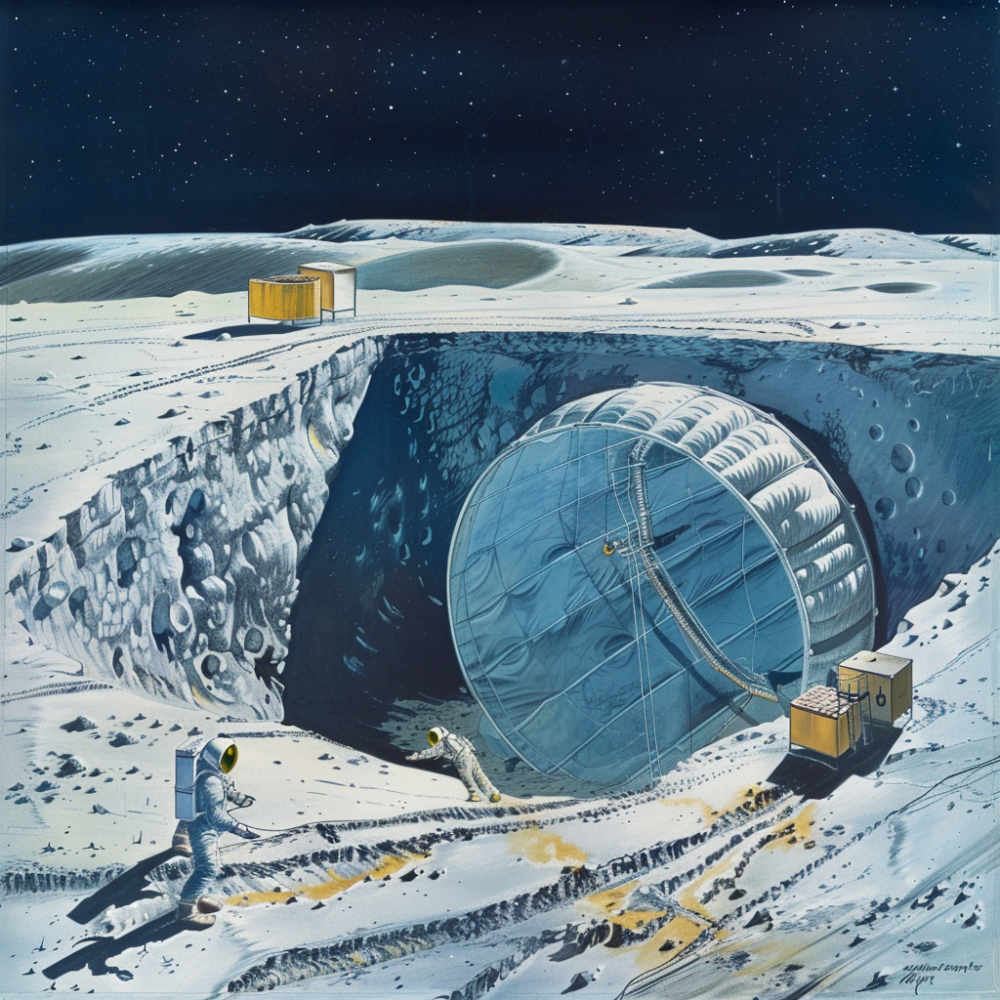

Inflatable Habitat Concept

Introduction
Introduction to the concept of underground inflatable structures on the Moon, discussing the fundamental challenges and goals of such endeavors.
Excavation and Preparation
Digging a Cavity:
- Equipment: Use robotic excavators or other machinery to dig a cavity of the desired size in the lunar regolith.
- Stabilization: Ensure the walls and ceiling of the cavity are stable to prevent collapse during and after inflation.
Cavity Lining:
- Protective Lining: Line the cavity with materials that prevent regolith particles from damaging the inflatable structure during and after inflation.
- Sealing: Ensure the lining provides an airtight seal to maintain the integrity of the inflated space.
Inflatable Structure Design
Materials:
- Durability: Use materials like Vectran or Kevlar, which are strong, flexible, and resistant to punctures.
- Multi-Layer Construction: Employ multiple layers for added protection against abrasion and punctures from sharp regolith particles.
Inflation Mechanism:
- Controlled Inflation: Design an inflation system that can gradually and evenly inflate the structure to prevent uneven expansion and potential damage.
- Internal Supports: Include internal supports or an internal frame to help maintain the shape during inflation.
Pressure Management
Internal Pressure:
- Air Supply: Use compressed air or other gases to inflate the structure, ensuring the internal pressure is carefully controlled.
- Pressure Regulation: Include pressure regulation systems to maintain the desired pressure levels and prevent over-inflation.
External Pressure:
- Balancing Forces: Consider the external pressure exerted by the surrounding regolith to ensure the structure can withstand these forces without collapsing.
Deployment and Inflation Process
Unfolding:
- Initial Deployment: Carefully unfold and position the inflatable structure within the excavated cavity.
- Alignment: Ensure the structure is properly aligned and anchored to prevent shifting during inflation.
Gradual Inflation:
- Slow and Steady: Inflate the structure slowly to monitor for any signs of stress or damage.
- Monitoring Systems: Use sensors to monitor pressure, structural integrity, and alignment throughout the inflation process.
Post-Inflation Use
Habitat or Workspace:
- Living Quarters: Once inflated, the structure can serve as living quarters, providing an Earth-like atmosphere for inhabitants.
- Workspaces: Create workspaces for construction, research, and other activities without the need for space suits.
Environmental Control:
- Life Support Systems: Install systems to regulate temperature, humidity, and air quality within the inflated structure.
- Lighting: Use artificial lighting to mimic natural light cycles, enhancing the comfort and well-being of the inhabitants.
Challenges and Solutions
Structural Integrity:
- Challenge: Ensuring the inflatable structure can withstand the external pressure of the surrounding regolith.
- Solution: Use high-strength materials and internal supports to reinforce the structure.
Airtight Sealing:
- Challenge: Maintaining an airtight seal to prevent air leaks.
- Solution: Employ robust sealing techniques and regularly inspect the structure for potential leaks.
Regolith Management:
- Challenge: Preventing regolith from damaging the inflatable structure.
- Solution: Line the cavity with protective materials and use smooth, abrasion-resistant layers for the inflatable.
- Scientific Researchers and Engineers:
- Astronomers and Astrophysicists: 4-6
- Geologists: 4-6
- Biologists: 4-6
- Engineers (Various Disciplines): 12-15
- Medical Staff:
- Doctors and Nurses: 4-6
- Biomedical Engineers: 3
- Technicians and Maintenance Crew:
- Technicians (HVAC, Electricians, IT): 8-10
- Maintenance Crew: 5-7
- Logistics and Supply Management:
- Supply Chain Managers: 3
- Inventory Specialists: 3
- Pilots and Astronauts:
- Mission Pilots: 4-6
- Astronauts: 8-10
- Administration and Operations:
- Base Administrators: 3-4
- Legal and Policy Advisors: 3
- Finance and Budget Managers: 3
- Psychologists and Social Scientists:
- Psychologists: 3
- Social Scientists: 3
- Educators and Outreach Specialists:
- Teachers and Trainers: 4-6
- Outreach Specialists: 3